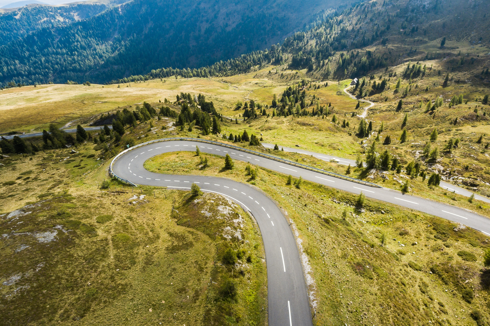

Explore the world!
-

-

- 
A citizen's guide to preserving biodiversity and protecting the planet earth
Biodiversity: So what is Biodiversity?
Biodiversity, also known as the biological diversity, it's basically the scientific term for the variety of life on Earth. Biodiversity is the amass of all different species on earth such as animals, plants, fungi and micro-organisms and their own particular habitats. It is important since it give us many natural resources and ecosystem services. It includes different types - of genes, species and ecosystem. Scientists estimate that earth's current species range from 10 to 14 million, but 86% hasn't been discovered yet.
Why is it important to protect biodiversity?
It is known that biodiversity is extremely important because it provides supporting, provisioning and regulating services. It is also important to conserve biodiversity for our own culture and aethistic reason.
Biodiversity provides economic benefits to people and natural ecosystems, which what we depend on it for foods we eat, we drink and the atmosphere of earth . Maintaining biodiversity is important for biological pest control, food sources, medications, soil formation, biological materials, recreational harvesting, pollination, ecotourism and the vast genetic resources that will be required for future sustainability of the environment and human society.
Biodiversity provides demanding support for drug discovery and the availability of medicinal resources. Researchers have found many natural biological resources by biodiversity which means medicines were originated by wild species, it have saved many people who was suffering from deadly diseases. Only a tiny fraction of wild species has been investigated for medical potential.
What are the threats to biodiversity?
Biodiversity is essential to our planet Earth but there are many issues that threatened Biodiversity. The main threats to biodiversity are pollution, climate change, deforestation, invasive species, habitat loss and overexploitation. Most threats to biodiversity are result of human activities.
What can we do to protect biodiversity as a "global citizen" here in my community?
Good thing that there's a lot to do to protect the biodiversity, just by doing a simple activities.
Here are the things that we can do to help :
- Reconsider your lawn.
- Help the pollinators.
- Reduce paper consumption.
- Reduce, Reuse and Recycle.
- Composting.
- Be a smart consumer